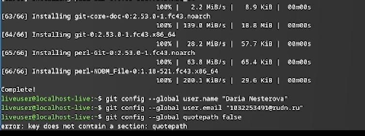
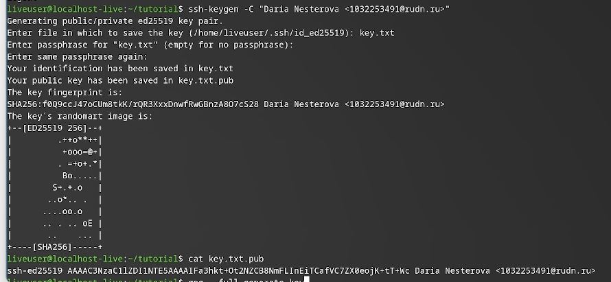
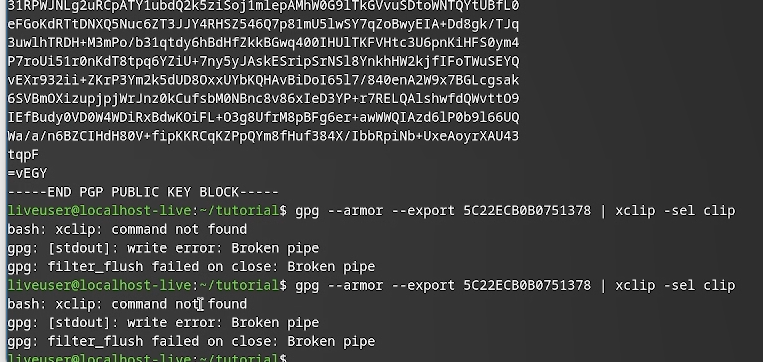
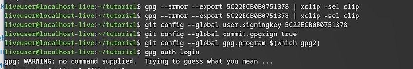
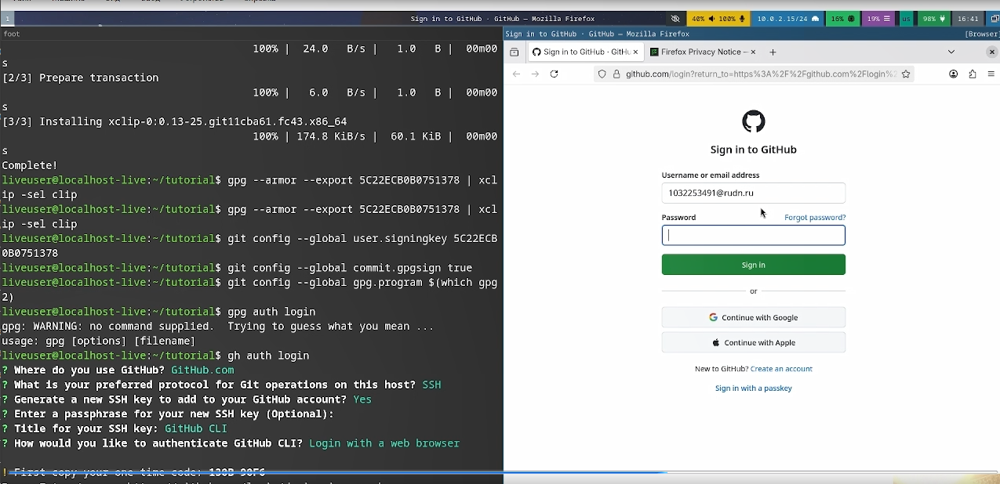
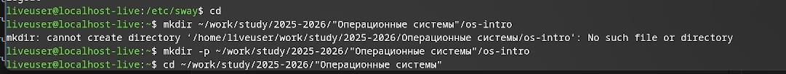
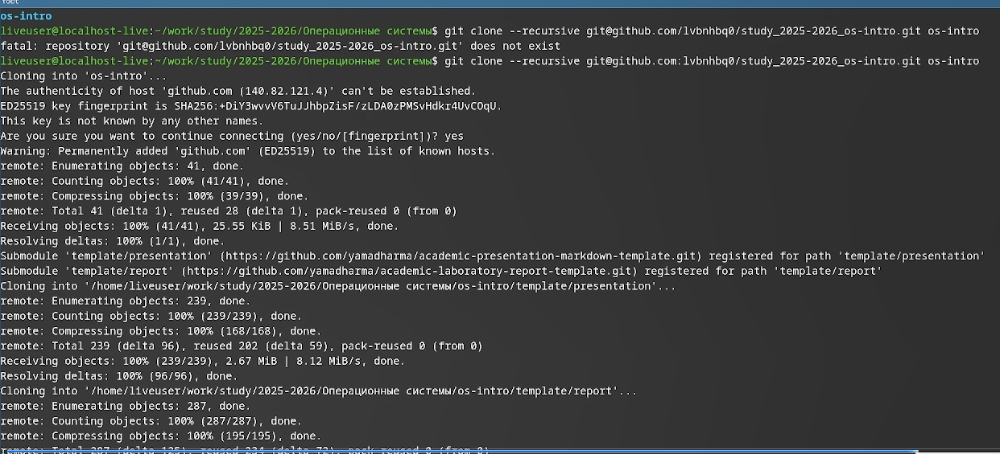

Цель работы заключается в теоретическом изучении концепций систем контроля версий и формировании практических навыков эффективного использования инструментария Git.
Системы контроля версий (VCS) используются для совместной работы над проектами. Проект хранится в репозитории, а VCS позволяет фиксировать изменения, совмещать правки разных участников и возвращаться к более ранним версиям.
В централизованных VCS (например, CVS, Subversion) есть единый сервер-репозиторий. Пользователь получает нужную версию файлов, работает с ней и отправляет изменения обратно. Сервер хранит всю историю правок и для экономии места может применять дельта-компрессию (сохранять только изменения между версиями). VCS также отслеживают конфликты при одновременной работе с файлом и позволяют их разрешать (слияние, ручной выбор, отмена или блокировка файла). Дополнительные возможности: поддержка ветвления (несколько версий одного файла с общей историей) и детальный журнал изменений с информацией об авторе и времени правок. В распределённых системах (Git, Mercurial) центральный репозиторий не обязателен.
Сначала произвожу базовую настройку git.

Далее создаю ssh и gpg ключи.

Экспортирую gpg ключ для авторизации на github.

Настраиваю автоматические подписи для коммитов.

Авторизуюсь на github для работы через терминал.

Создаю директорию курса по шаблону

В конце настраиваю рабочую директорию

В процессе выполнения лабораторной работы я освоила основные приёмы работы с Git: научилась создавать и настраивать репозитории, генерировать SSH и GPG-ключи, выполнила первичную конфигурацию каталога курса и настроила авторизацию на GitHub.